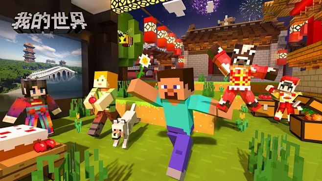

DawnAurora's Player Animation (Dapa)
Minecraft 1.20.1 • Fabric • Apache-2.0 License
✅ Completed Features（已完成功能）
- Custom idle animations 自定义待机动画
- Custom head yaw & pitch animations 自定义头部俯仰动画
- Run / Sprint / Swim / Sneak / Prone animations 跑、冲刺、游泳、潜行、匍匐动画
- Jump, fall & land animations 跳跃、坠落、落地动画
- First-person hand animations 第一人称手部动画
- Elytra gliding, climbing, wading animations 鞘翅、攀爬、涉水动画
- Smooth transition between different states 状态切换平滑过渡
📅 Planned（开发中）
- Shield blocking animation 盾牌格挡动画
- Hotbar & equipment swap animation 物品栏切换动画
- Torch / Lantern holding animation 手持火把、灯笼动画
- Player hurt animation 受伤动画
⚠️ Important Notes：This is a Resource Pack, NOT a Mod.
Must install ETF and EMF, otherwise animations cannot work.
Alpha test version, unstable, may have animation glitches. Client-side only. Works for single & multiplayer.
📖 Installation 安装教程
- Install Fabric Loader 1.20.1
- Install dependencies ETF & EMF
- Download Dapa resource pack zip from Releases
- Put zip into
resourcepacks folder
- Enable Dapa inside Minecraft resource pack settings
- Restart game
⬇️ 下载 Dapa 资源包
🔗 全部链接 Links